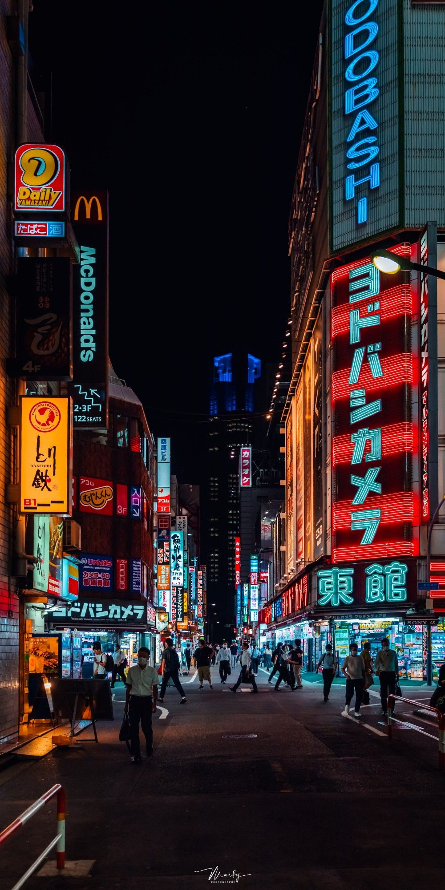
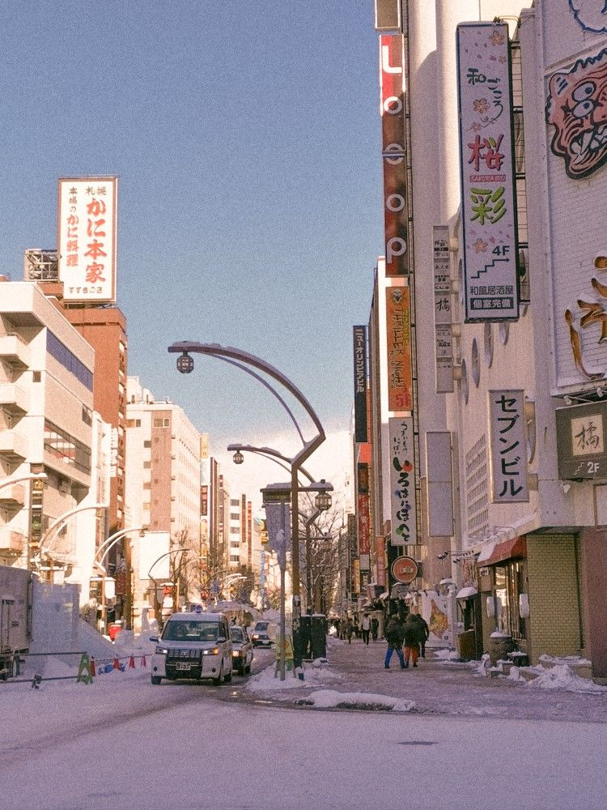

JAPANESE CITIES
Japan has many attractive cities that preserve the traditions and culture unique to each region. Many large cities, such as Sapporo in Hokkaido and, Tokyo as the center of Japan, attract many tourists to Japan each year.
Each place offers different sightseeing opportunities and traditional cultures, making it well worth a visit. In this article, we will focus on the major cities of Japan, or as some may see it, the heartbeat of Japan.
10 major cities in Japan
- Tokyo
Tokyo is a metropolis consisting of 23 wards and several municipalities in the west. As the center of Japan, everything from shopping, dining, entertainment, economics, and politics is concentrated in Tokyo. Tokyo is home to many towering buildings and many internationally recognized symbols such as Tokyo Tower and Skytree. Tokyo is probably one of the first places you should visit when you come to Japan and is the gateway to all sorts of adventures.  - Yokoham
Yokohama is a large port city that has developed over the years as an international trading port connecting Japan with the rest of the world. Yokohama, which in the past has been ranked as the best place to live in Japan, is easily accessible from Tokyo by train, and many people from Tokyo visit the city for sightseeing and business. Yokohama has a strong international flavor with its Chinatown and red brick warehouses, and it has become a tourist destination as well. Recently, an outlet mall has also been built, making it a great place for shopping. It is a wonderful port town where one can spend a whole day having fun. - Osaka
Osaka is the center of the Kansai region, a major Japanese metropolis with a variety of tourist attractions, including Osaka Castle and Tsutenkaku Tower. In particular, Universal Studios Japan is definitely worth visiting when you come to Osaka. Osaka is home to many fascinating and uniquely Japanese entertainment attractions, such as the recent collaboration between Universal Studios Japan with Nintendo. Osaka is also known for its delicious food such as takoyaki, okonomiyaki, and kushikatsu which are very popular among not only locals but for tourists. - Nagoya
Nagoya is a large city located right in the center between Osaka and Tokyo. It is the center of Aichi Prefecture, easily accessible by bullet train or a local train from anywhere in the prefecture, from Gifu in the north, Tokyo in the east, and Osaka in the west. Nagoya Castle, a short train ride from Nagoya Station, is a trademark castle with its golden orcas. Nagoya is also famous for its gourmet cuisine and dishes stewed in miso are not to be missed. Miso nikomi udon and miso katsu (pork cutlet) are excellent dishes that allow you to taste the richness of miso. - Sapporo
Sapporo is the largest city in Hokkaido, the northernmost prefecture of Japan. The average temperature in Sapporo is lower than that of Tokyo, and the average summer temperature is 26.4℃, making it a very cool place to avoid the hot and humid climate of the summer. In winter, it gets very cold, and Hokkaido is proud of its gourmet foods such as ramen and soup curry, which are the most commonly eaten dishes there during the winter. Don't forget that Hokkaido is a treasure trove of dairy and seafood. Fresh seafood and juicy steaks are now being served at various Sapporo restaurants. You can enjoy Sapporo in summer or winter.  - Fukuoka
One of the centers of Kitakyushu would be Fukuoka. In particular, Hakata in Fukuoka City is a pop culture area where Kyushu's young people gather. For visitors to Japan, Hakata Station is only a 5-minute train ride from Fukuoka Airport. It is easy to get to and from the Hakata area. Hakata has a strong yatai (food stall) culture, and delicious gourmet foods such as Hakata tonkotsu ramen and motsunabe are outstanding. This is a must-visit spot if you are sightseeing in Kyushu. - Kobe
Kobe in Hyogo Prefecture is perhaps the most fashionable city that can be reached by train from Osaka or Kyoto. It is a beautiful port town, and at night the neon lights of Mozaic Big Ferris Wheel glow beautifully. The people of Kobe are known for being the first in Japan to introduce foreign cultures and sports, such as golf and jazz, to Japan, and because of the strong Western influence, the city itself has the exotic scent of a seaside town in some far off place. If you come here with your sweetheart, you will be enchanted by the elegance of the city, so why not visit? - Kyoto
If you want to fully enjoy the traditional Japanese atmosphere, Kyoto would be perfect for you. Located just above Osaka in the Kansai region, Kyoto was the capital of Japan before the capital was moved to Tokyo. For this reason, the city of Kyoto has always been enveloped in an atmosphere of elegance, and there are numerous shrines and temples in the city, allowing visitors to fully enjoy the atmosphere that is uniquely Japanese. Kyoto is also known for its tea, and the matcha from Uji is superb. In addition to matcha, you can also taste delicious matcha sweets.
- Hiroshima
Hiroshima is a city rich in nature, blessed with the sea and mountains in Chugoku region, and since the atomic bomb was dropped on August 6th, 1945, it has been known as a peace-loving city. Although Hiroshima is a city of peace, it also has many beautiful traditional buildings. One good example is Itsukushima Shrine, famous for its vermilion torii (shrine gate) built over the sea. If you come to Hiroshima, be sure to try Hiroshima-style okonomiyaki, which has plenty of cabbage and noodles inside. - Sendai
The last city here is Sendai, the largest city in the Tohoku region. Sendai is also famous for its lush greenery, with a statue of Lord Date Masamune, the proud military commander of Sendai, and many zelkova trees planted in the city. A 30-minute to 1-hour drive from Sendai to the suburbs will take you to the valleys and beautiful rivers of Akiu, Sakunami, and Izumi areas. You can enjoy cool nature in summer and beautiful autumn leaves in fall that will captivate all who see them. Sendai, with its abundance of nature, is a must-visit spot when you come to Tohoku.
Source:japanwondertravel.com